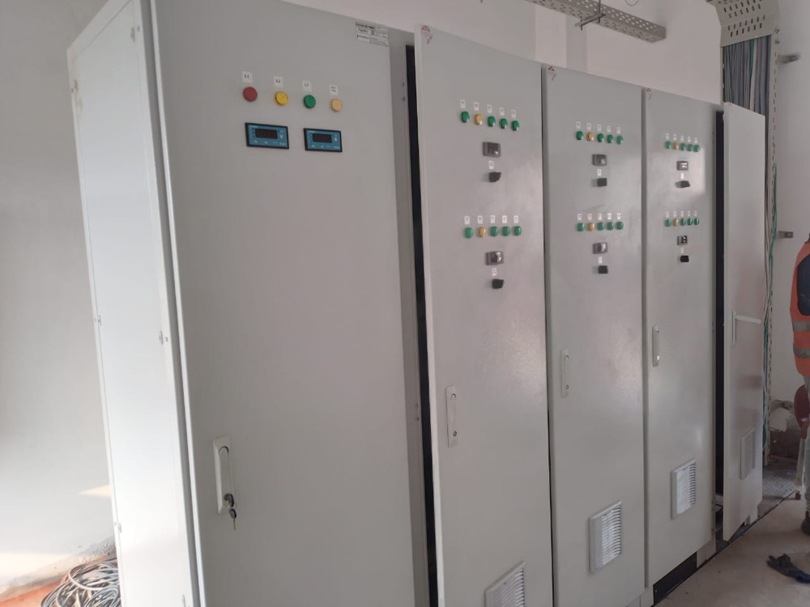

Cold storage Lahore — designed, manufactured, and installed from our Multan Road plant.
Izhar Foster's 277,460 sqft manufacturing facility is in Lahore. When you commission cold storage in Lahore, the FireSafe PIR panels leave our factory and arrive on your site the same day — no import lead time, no port clearance, no inland freight markup. Our engineering team is here. Our service team is here. 2,100+ cold-chain installations across Pakistan, hundreds of them in Lahore and Punjab. Coca-Cola, Nestlé, Haier, Pakistan Army. Since 1959.
Three engineering realities every Lahore cold store must be designed for.
Lahore's ASHRAE 0.4% design dry-bulb is 46–48°C — among the most punishing ambient conditions in the world for refrigeration. Izhar Foster applies mandatory condenser derate: medium-temperature refrigeration loses 2.0%/K above rated ambient; low-temperature loses 2.7%/K. A plant rated at +35°C running at +48°C has 26–36% less net cooling capacity. We size every Lahore refrigeration plant for rated output at actual summer peak — not the manufacturer's laboratory rating point.
LESCO industrial load-shedding in Lahore typically runs 2–6 hours per day in summer, with unscheduled outages on top. Every Lahore cold storage project from Izhar Foster includes: thermal mass sizing so product stays in spec during outage windows, soft-starter and auto-restart logic to protect compressors against voltage sag on re-energisation, and generator interface scope as a standard deliverable. We do not treat backup power as an optional add-on in a city where the grid is this variable.
Our 277,460 sqft PIR sandwich panel plant is on Multan Road. Panels for a Lahore cold store leave our factory and arrive on site same-day. No import duty. No shipping delays. No port demurrage. Quality is consistent across thousands of square metres because every panel comes off the same production line, with our own quality management (ISO 9001:2015 SGS-certified). Lahore projects also typically price 8–15% better than builds in cities where panels must be transported 1,000+ km from Lahore.
Named installations. Real engineering. Real clients.
We don't list project counts without names. Here are our publicly-referenceable Lahore cold-chain installations — each with an engineering note on what made it complex, and a link to the full case study where photos and technical detail are available.

Coca-Cola TCCEC — High-bay beverage cold storage
High-bay warehouse for finished-goods staging at The Coca-Cola Export Corporation's Lahore operation. Drive-in pallet racking, ceiling-mounted ammonia evaporators, Bitzer-based refrigeration plant, FireSafe PIR envelope. One of Pakistan's most demanding beverage cold-chain installations.
Full case study →
Haier Lahore — IEC 60068 climate test chambers
PIR-clad environmental testing chambers for Haier's Lahore QA laboratory. IEC 60068 test profiles — temperature excursion to +50°C and below −20°C, controlled humidity, Bitzer cascade refrigeration. The same cold-chain engineering discipline applied to electronics reliability testing.
Full case study →Every cold-chain need in Pakistan's largest industrial city.
Lahore's industrial base spans food and beverage, pharmaceuticals, electronics manufacturing, automotive components, agri-processing, and 3PL logistics. Each sector needs cold storage engineered around its temperature, tolerance, and regulatory requirements — not a generic catalogue room.
Walk-in chillers, blast freezers, ambient warehouses for Lahore's food processors, bottlers, and FMCG distribution centres. Coca-Cola, Pepsi, Nestlé, Gourmet, and others already rely on Izhar Foster cold storage in and around Lahore.
DRAP-compliant cold rooms at +2/+8°C for vaccines and biologics, +15/+25°C ambient storage for oral solids. IQ/OQ/PQ validation documentation, N+1 Bitzer redundancy, validated temperature mapping. Lahore is Pakistan's pharmaceutical manufacturing hub — Lahore pharma cold storage is a core specialism.
PIR-clad climate test chambers for IEC 60068 and ASHRAE 55 test profiles. Haier, LG Pakistan, Atlas Honda, and Hyundai Nishat among Lahore's electronics and appliance manufacturers needing environmental test infrastructure.
Punjab's kinnow, mango, and apple harvest flows through Lahore's distribution network. Controlled atmosphere stores extend shelf life 4–6× for export-grade fruit. Potato and onion long-storage rooms for Punjab's dominant agri-commodity crops. Lahore is the hub for Punjab's entire agri cold-chain.
Multi-temperature cold chain warehouses for 3PL operators serving Lahore's FMCG, dairy, and frozen food distribution. Multi-zone facilities with −25°C frozen, +4°C chilled, and +15°C ambient under one roof. Loading dock engineering rated for Lahore's peak summer ambient.
FireSafe PIR panels manufactured in Lahore and available for direct supply to builders, contractors, and developers across Punjab. Thicknesses 50–200 mm. U-values 0.13–0.36 W/m²K. λ 0.022 W/m·K aged declared value. Fire class B1. The only PIR (not PU) sandwich panel manufactured in Pakistan.
The technical decisions that Lahore's climate forces.
Refrigeration sizing for 48°C ambient
The most common cold storage engineering mistake in Lahore is sizing refrigeration to the manufacturer's catalogue rating — which is typically stated at +32°C or +35°C ambient. At Lahore's summer peak of 46–48°C, a medium-temperature system loses approximately 2.0% of net cooling capacity per Kelvin above its rated ambient, and a low-temperature system loses 2.7%/K. A system sized at +35°C will deliver only 78–84% of rated capacity at +47°C ambient — and this is before accounting for compressor discharge temperature limits and condenser pressure rise.
Izhar Foster sizes every Lahore refrigeration plant to deliver its rated capacity at the actual summer design point. We use ASHRAE Refrigeration Handbook Ch. 35 condenser sizing methodology with Pakistan-specific derate factors, cross-validated against Bitzer Software and Heatcraft NROES for every project.
Generator integration and soft-starter logic
LESCO's industrial supply in Lahore's manufacturing zones — Sundar, Quaid-e-Azam Industrial Estate, Raiwind Road, Multan Road, Kot Lakhpat — is materially more reliable than residential supply, but still subject to load-shedding and voltage sag events. For cold stores where product loss during an extended outage would be commercially significant (pharmaceutical cold rooms, blast freezers holding high-value protein), we design generator integration as part of the base scope: automatic transfer switch, rated genset sizing including compressor inrush current, and load-shedding alarm integration that alerts on-site staff before temperatures drift out of specification.
Soft starters on compressors protect against the voltage sag that occurs when LESCO supply is restored after a cut — the inrush current without a soft starter can trigger upstream fuses or damage compressor windings on the fifth or sixth restart in a single day during summer load-shedding peaks.
Panel thickness selection for Punjab summers
At 46–48°C ambient on the outer face, a cold store running at −20°C inside has a 66–68°C delta-T across the panel. Panel thickness selection must account for this full thermal gradient. For a −20°C freezer in Lahore, our standard minimum panel specification is 100 mm PIR (U = 0.19 W/m²K). Blast freezers at −35°C or below in Lahore typically specify 150 mm (U = 0.13 W/m²K). Under-specified panels cost less upfront but cost more in electricity every year for the life of the facility — and at LESCO's commercial tariff of approximately PKR 41–44/kWh, the payback on thicker panels in Lahore is typically under 3 years.
Condensate and drainage design
Lahore's summer humidity, while lower than Karachi's, still creates condensate management requirements at cold room doors and on evaporator drains. Door frame heaters are standard on all freezer rooms. Evaporator drain lines must be trace-heated and routed to drains rather than dumped to a tray that re-freezes. For blast freezers, defrost cycle scheduling must account for the high ambient — overnight defrost when ambient drops to 30–35°C typically yields faster defrost and lower energy use than mid-day defrost at 48°C ambient.
Get an indicative cost for your Lahore cold store in 30 seconds.
The cost calculator is pre-set for Lahore — LESCO tariff, 48°C summer ambient, Punjab agri-commodity presets. Select your commodity, capacity, and temperature. Get a PKR cost band with engineering, civil, refrigeration, and operating cost breakdown. Rough estimate ±20% — engineer validation required before quoting.
Estimate Lahore cold store cost →Everything your Lahore cold store needs.
Walk-in chillers, blast freezers, multi-zone warehouses
FireSafe PIR Panels →Manufactured in Lahore — same-day site delivery across Punjab
Refrigeration Systems →Bitzer · Heatcraft · LU-VE — sized for 48°C Lahore ambient
Pharma Cold Storage →DRAP-compliant · IQ/OQ/PQ · N+1 Bitzer redundancy
CA Stores →Kinnow, mango, apple — Punjab export-grade CA storage
Cold Storage Karachi →Port-city cold chain — coastal humidity engineering